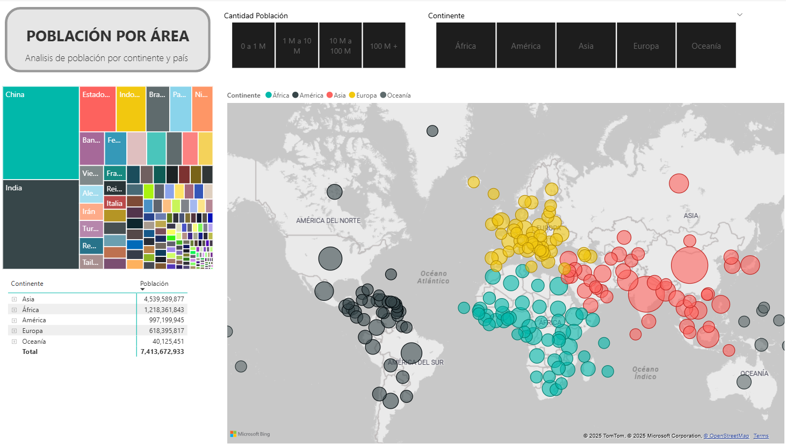
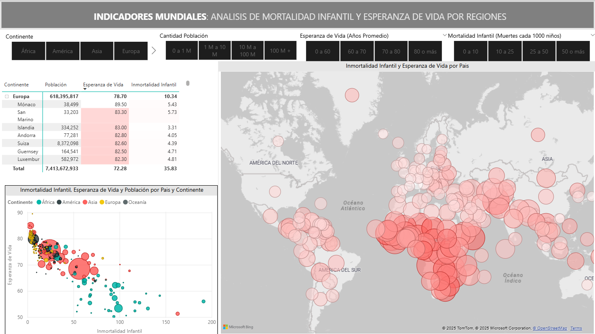

Power BI Dashboard: Infant Mortality, Life Expectancy, and Population Analysis
Investigator: Valentin Imperio
This project focuses on building a comprehensive Power BI dashboard to analyze key global health and demographic indicators across countries and continents. The datasets include information on infant mortality rates, life expectancy, and total population, allowing for a holistic view of how these metrics interrelate and evolve across regions.
Objective
The primary objective of this report is to uncover and summarize key trends from the provided global health data. This includes identifying countries and regions with the highest and lowest infant mortality rates, analyzing the correlation between life expectancy and infant mortality, exploring population distribution and density across different continents, and identifying key demographic patterns that influence a country's health outcomes.
Project Deliverables
The main deliverable of this project is an interactive Power BI dashboard featuring multiple visualizations:
- Maps and Geographic Analysis: Highlight differences between continents and countries.
- Trend Charts: Track changes in life expectancy and mortality over time.
- Comparative KPIs: Provide benchmarks for regions with the highest and lowest values.
- Population Dynamics: Show global distribution and growth trajectories.

Key Findings
- Infant Mortality Disparities: The data reveals significant global disparities in infant mortality rates, with African nations showing extremely high rates (e.g., Angola with 191.19 deaths per 1,000 live births) and European countries having very low rates (e.g., Andorra with 4.05 deaths).
- Life Expectancy Correlation: There is a clear negative correlation between infant mortality and life expectancy. Regions with lower infant mortality rates generally have higher life expectancies.
- Population Distribution: The global population is highly concentrated in certain areas, particularly Asia, with countries like China and India each having over 1 billion people.
- Regional Trends: Regional Trends: Africa has the highest infant mortality rates, while Europe and North America consistently show the highest life expectancy values.
- Population Growth: Population growth is most significant in Asia and Africa, which influences global health and development priorities.

Conclusions
- This analysis provides a clear overview of the significant global disparities in health and demographic indicators. The strong correlation between infant mortality and life expectancy underscores the critical importance of public health initiatives in improving a population's overall well-being. The Power BI dashboard serves as a usefull tool to further investigate these relationships and to identify areas that may require more detailed study. The findings suggest that investment in healthcare infrastructure and social programs in vulnerable regions could lead to significant improvements in key health metrics and, consequently, in a country's human development.
Last updated on September 16th, 2025